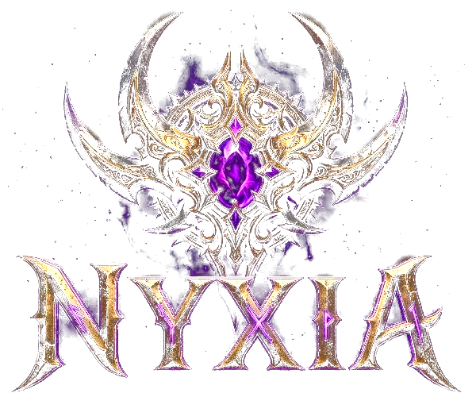

Klan ve boss savaşları
Klanını kur, ortak depoyu yönet. 20 aşamalı klan zindanında ve klan boss'unda birlikte savaş.
 NYXIA ONLINE
NYXIA ONLINE

Nyxia Online, cebinde taşıdığın bir online RPG. Karakterini geliştir, klanınla boss'lara karşı savaş, savaş alanında rakiplerini yen.
Klanını kur, ortak depoyu yönet. 20 aşamalı klan zindanında ve klan boss'unda birlikte savaş.
50. seviyeden sonra dünya boss'ları, güçlendirilmiş av ve haftalık sıralama.
6 kalitede silah ve zırh, takılar, kanatlar. Eşyalarını geliştir, setlerini tamamla.
Eşyalarını tezgâhına koy, diğer oyuncularla takas et.
İlerlemen sunucuda saklanır. Telefon değiştirsen de kaldığın yerden devam edersin.
Savaşlar ve ödüller sunucuda hesaplanır, hileye karşı korunur.
Wiki'de oyunun tüm sistemleri anlatılıyor. Bir sorunun varsa destek ekibimize yaz.